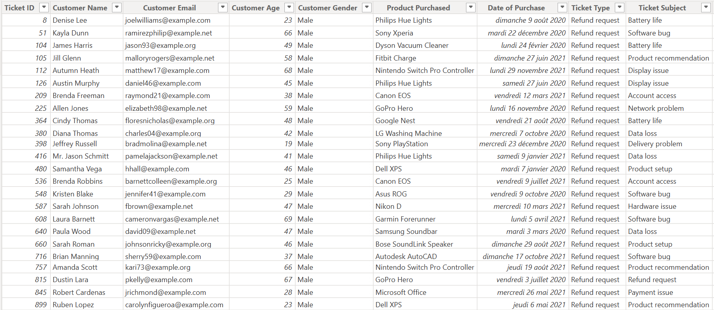
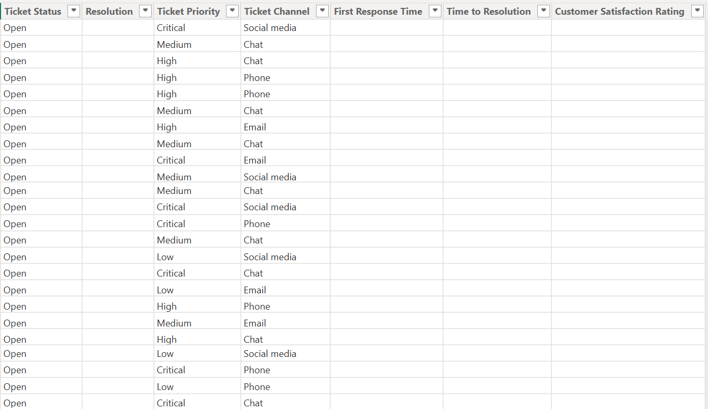

Analyse, nettoyage et suivi de la performance d'un support client
Source des données
- Dataset : Customer Support Ticket Dataset
- Lien : Kaggle
- Granularité source : une ligne = un ticket (~8 469 lignes)
- Format : CSV
- Table : Customer Support Ticket Dataset.csv
- Description : Dashboard Power BI de suivi de la performance d'un support client, autour de 3 familles de KPI : qualité, délai, satisfaction.
- Le projet a été réalisé en excel et powerBI


- Ce projet a été réalisé le 18 juillet 2026 et finalisé le 23 juillet 2026
- Colonnes d'origine (anglais) : Ticket ID, Customer Name, Customer Email, Customer Age, Customer Gender, Product Purchased, Date of Purchase, Ticket Type, Ticket Subject, Ticket Description, Ticket Status, Resolution, Ticket Priority, Ticket Channel, First Response Time, Time to Resolution, Customer Satisfaction Rating
- Aperçu du dataset :


Pour voir la description des différents champs de colonne je vous renvoie vers le lien kaggle ou une descrption du dataset est effectué
Contexte / Objectif du projet
Ce projet avait avant tout pour objectif de mettre en pratique les apprentissages que je venais d’acquérir, puisque je sortais tout juste d’une formation intensive de 30 jours en Power BI. Il s’agissait donc de mon premier projet complet mêlant Power Query, modélisation, construction de KPI et création d’un dashboard multi‑pages.
L’objectif principal était d’analyser plusieurs familles de KPI et de concevoir un tableau de bord permettant de suivre la performance de différents prestataires. Ce travail m’a permis de reproduire les étapes clés d’un véritable poste orienté pilotage de la performance / reporting BI :
- Nettoyage d’une donnée source imparfaite, avec Power Query, en appliquant les bonnes pratiques vues en formation (gestion des types, normalisation, suppression des doublons, correction des anomalies).
- Création d’un dashboard multi‑pages, structuré autour de KPI décisionnels, avec un design plus abouti et professionnel que celui de mon premier projet.
- Mise en place de mesures DAX, indispensables pour le calcul de taux, d’indicateurs de performance et d’agrégations dynamiques.
Ce projet m’a également permis de consolider mon utilisation de Power Query, en appliquant concrètement les transformations apprises durant ma formation, et de comprendre comment les intégrer dans un pipeline complet allant du nettoyage à la visualisation.
Au global, ce projet constitue une première expérience concrète et complète en Business Intelligence, combinant :
- Nettoyage de données
- Modélisation
- Analyse de KPI
- Visualisation
- Mise en place d'un dashboard professionnel
Le projet a été séparé en plusieurs étapes :